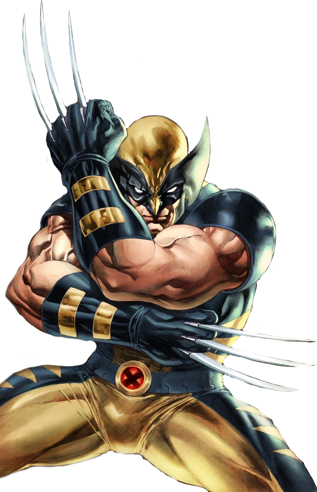

WOLVERINE

BIO
James Howlett was born to wealthy John and Elizabeth Howlett in Alberta, Canada, during the last years of the 19th century. As a child, he was frail and unhealthy due to his overactive mutant immune system and was neglected by his mother, who had been institutionalized following the death of her first son, John Jr., in 1897. James’s mutant abilities were triggered when his father was shot by the Howlett groundskeeper Thomas Logan, whom he did not know was his real father. James killed Logan, slashed the face of Logan’s son and his friend Dog, and left Alberta with a childhood friend, Rose O’Hara
Full Name | James Howlett
Origin/Birthplace | owlett Estate, Cold Lake, Alberta, Canada
Allegiance | Hero
Race | Human/Mutant
POWER STATS
Intelligence | 75%
Strength | 90%
Speed | 80%
Durability | 90%
Power | 80%
Combat Exp | 90%